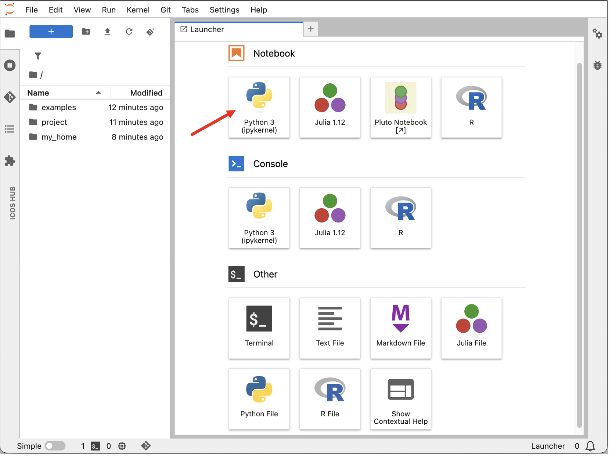
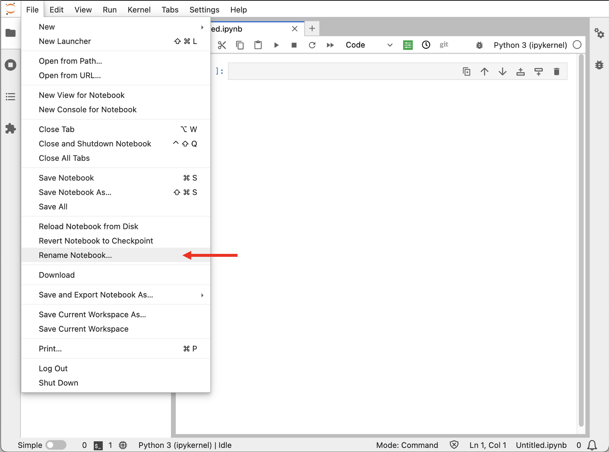
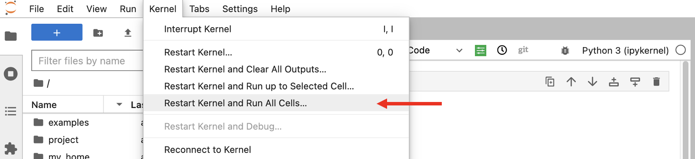
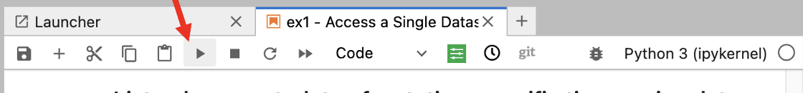
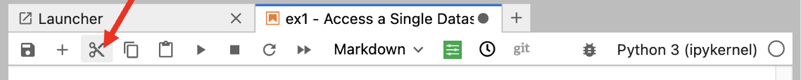
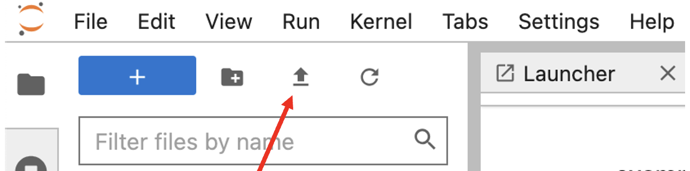

Your First Jupyter Notebook
This guide is intended for users who are new to Jupyter notebooks in general. It explains the basic actions you need to work with Jupyter notebooks.
Create a notebook
To create a new notebook:
- Open the file browser in Jupyter.
- Select Python3 in the Launcher window.

A new browser tab opens with a notebook named Untitled.ipynb.
Rename a notebook
To rename your notebook:
- Open the notebook.
- Go to File.
- Click Rename Notebook....
- Enter the new name.

Run all cells in a notebook
To run the whole notebook from the beginning:
- Go to Kernel.
- Select Restart & Run All.

This restarts the kernel and executes all cells in order.
Run a single code cell
A notebook consists of cells. To run one cell:
- Click inside the cell you want to run.
- Click Run in the toolbar, or press Shift + Enter.

Only the active cell is executed. The active cell is highlighted in the notebook interface.
Use code and Markdown cells
Jupyter notebooks can contain both code and formatted text.
Use a Code cell for Python code.
Use a Markdown cell for text, headings, explanations, links, and simple formatting.
The current cell type is shown in the dropdown menu in the notebook toolbar. If you are writing Python code, make sure the cell type is set to Code.
Add a new cell
To add a new cell below the active cell, click the + button in the toolbar.
Delete a cell
To delete a cell:
- Select the cell.
- Click scissor button in the toolbar.

Stop a running notebook
If a cell or notebook is taking too long to run, interrupt the kernel.
You can do this by clicking Interrupt kernel in the toolbar, or by going to:
Kernel → Interrupt
Save your notebook
Go to File → Save Notebook to save your work.
On the Collaborative Jupyter Hub, files in your home directory or project directory are saved persistently.
On ExploreData, your work is not saved permanently. Download your notebook if you want to keep it.
Download a notebook
Go to File → Download to download a notebook to your local computer.
Upload a notebook
To upload a notebook:
- Click the blue upload button on the left toolbar.
- Select the notebook file from your computer.
- Click Open.

Restart your Jupyter server
Restarting your server can help refresh software updates, permissions, and project access.
- Go to File → Hub Control Panel.
- Click Stop My Server.
- Wait until the server has stopped.
- Click Start My Server.
Log out
To log out of Jupyter Hub:
- Go to File.
- Click Log Out.